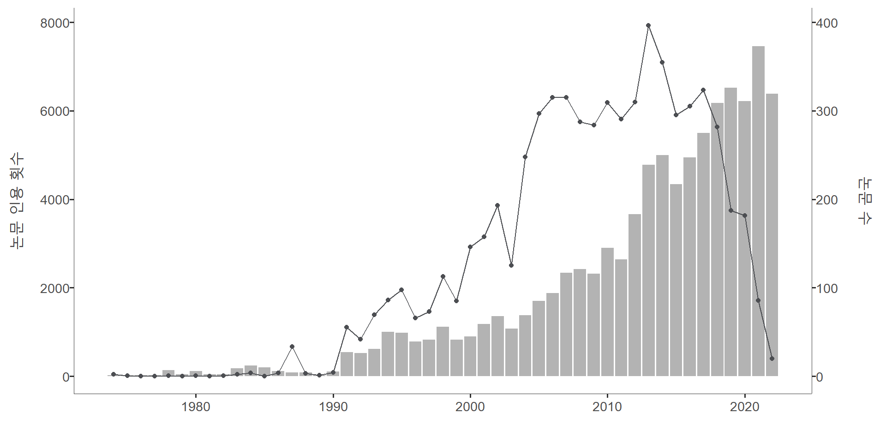

suppressPackageStartupMessages({library(readr)library(kableExtra)library(plotly)library(ggplot2)library(dplyr)library(tidyr)library(nlme)library(scdhlm)library(sjPlot)})wos <-read_csv("https://raw.githubusercontent.com/mshin77/2022ksse/main/data/wos.csv", show_col_types =FALSE)year_doc <- wos %>%group_by(PY) %>% dplyr::summarize(publication_number =n()) year_TC <- wos %>%group_by(PY) %>% dplyr::summarize(total_citation =sum(TC))year_doc_counts_all <-left_join(year_doc, year_TC, by ="PY")year_citation_plot <- year_doc_counts_all %>%ggplot() +geom_col(aes(PY, publication_number*20), fill ="#B3B3B3") +geom_line(aes(PY, total_citation), size =0.5, color="#4C4E52") +geom_point(aes(PY, total_citation), size =1.5, color ="#4C4E52") +scale_y_continuous(sec.axis =sec_axis(~./20, name ="논문 수")) +labs(x ="", y ="논문 인용 횟수", fill ="") +theme_classic(base_size =13) +theme(axis.line =element_line(color ="#404040", size =0.2),axis.title =element_text(size =15, color ="#404040"),axis.text.y.left =element_text(margin =margin(l =9)),axis.text.y.right =element_text(margin =margin(r =15)))year_citation_plot

데이터베이스: Web of Science, 1970-2022, 총 4,679편 (“single case” OR “single subject” OR “N of 1” OR “small N” OR “multiple baseline” OR “multiple probe” OR “alternating treatment” OR “reversal design” OR “withdrawal design” OR “changing criterion” ) AND (“meta-analysis” OR “synthesis” OR “review”)
단일대상 실험설계 연구의 특성
개별 학생(N=1) 또는 소집단을 대상으로 중재를 제공
행동의 예측, 검증, 재현 과정을 통하여 내적 타당도를 확인
그래프 데이터가 수집되어야 하며, 시각적인 분석이 이루어짐
연구설계에 따라서 기초선, 중재, 유지, 일반화 구간 등 설정
Code
AB <-read_csv("https://raw.githubusercontent.com/mshin77/2022ksse/main/data/ABAB.csv", show_col_types =FALSE)AB$Case <-paste0("학생 ", AB$Case, sep ="")AB.plot <- AB %>%ggplot(aes(Session, Outcome)) +geom_line(data =subset(AB, AB$Phase =="Baseline1"), aes(linetype='1'), linewidth =0.5) +geom_line(data =subset(AB, AB$Phase =="Baseline1.Predict"), aes(linetype='2'), linewidth =0.5) +geom_line(data =subset(AB, AB$Phase =="Intervention1"), aes(linetype='1'), linewidth =0.5) +geom_line(data =subset(AB, AB$Phase =="Intervention1.Predict"), aes(linetype='2'), linewidth =0.5) +geom_line(data =subset(AB, AB$Phase =="Baseline2"), aes(linetype='1'), linewidth =0.5) +geom_line(data =subset(AB, AB$Phase =="Intervention2"), aes(linetype='1'), linewidth =0.5) +geom_point(size =2.5) +theme_minimal(base_size =13) +theme(plot.title =element_text(face ="bold", size =15),legend.position ="top",panel.grid.major =element_line(colour ="grey95", linewidth =0.2),panel.grid.minor =element_blank(),legend.text =element_text(size =13),legend.title =element_text(size =13),legend.title.align =0.5,strip.text.x =element_text(color ="#3B3B3B", size =13),axis.text.x =element_text(size =13, color ="#3B3B3B"),axis.text.y =element_text(size =13, color ="#3B3B3B"),axis.title =element_text(face ="bold", size =13, color ="#3B3B3B") ) +labs(x ="회기",y ="바람직한 행동(%)" ) +guides(linetype="none") +geom_vline(aes(xintercept =3.5), linetype ="longdash", linewidth =0.3, color ="grey10") +geom_vline(aes(xintercept =8.5), linetype ="longdash", linewidth =0.3, color ="grey10") +geom_vline(aes(xintercept =12.5), linetype ="longdash", linewidth =0.3, color ="grey10") +annotate(geom ="text", x =2, y =95, label ="기초선", color ="#0000FF", fontface ='bold', Size =5.5) +annotate(geom ="text", x =6, y =95, label ="중재", color ="#0000FF", fontface ='bold', Size =5.5) +annotate(geom ="text", x =10.5, y =95, label ="기초선", color ="#0000FF", fontface ='bold', Size =5.5) +annotate(geom ="text", x =15, y =95, label ="중재", color ="#0000FF", fontface ='bold', Size =5.5) +annotate(geom ="text", x =6, y =25, label ="예측하기", color ='red', fontface ='bold', size =5.5) +annotate(geom ="text", x =10.5, y =5, label ="검증하기", color ='red', fontface ='bold', size =5.5) +annotate(geom ="text", x =15, y =75, label ="재현하기", color ='red', fontface ='bold', size =5.5) +annotate("rect", xmin =3.8, xmax =8.3, ymin =0, ymax =20, alpha = .2) +annotate("rect", xmin =8.8, xmax =12.3, ymin =60, ymax =90, alpha = .2) AB.plot %>%ggplotly() %>%layout(dragmode ="select", height=400)
왜 종단 자료인가?
개인의 행동을 시간에 따라 반복적으로 측정
조각별 성장모형을 통하여 구간 간의 행동 변화를 측정
t 시점의 관측치는 이전 시점의 관측치와 관련있음 (자기상관계수)
패널조사 등의 종단 연구와 다르게 집중적이고 빈번하게 데이터를 측정
반복측정에서 가까운 시점 간의 상관계수가 먼 시점 간의 상관계수보다 높음
개인 간 변화(시간에 따라 변하지 않는 개별 특성)와 개인 내 변화(시간에 따라 변하는 변수)를 동시에 측정
sced.plot <- sced.plot +stat_smooth(method ="lm", se =FALSE, color ="#3B3B3B", size =0.5, alpha =1, linetype="dashed")sced.plot %>%ggplotly()
3수준 다층 모형
단일대상 실험설계 데이터만 포함하여 한 단계로 메타분석 실시.
연구질문 1 “장애학생들을 위한 가상조작물을 활용한 수학 중재는 어떠한 즉각적인 중재 효과 및 중재 구간에서의 변화 추세를 보였는가?”
연구질문 2 “장애학생 및 연구 수준의 특성에 따라 즉각적인 중재 효과 및 중재 구간에서의 변화는 어떻게 달라지는가?
Shin, M., Park, J., Grimes, R., & Bryant, D. P. (2021). Effects of using virtual manipulatives for students with disabilities: Three-level multilevel modeling for single-case data. Exceptional Children, 87(4), 418–437.
1수준 (\(i\) 반복 측정 자료)
\[
\begin{aligned}
Y_{i j k}=& \beta_{0 j k}+\beta_{1 j k} \text { Intervention }_{i j k} \\
&+\beta_{2 j k} \text { Time }_{i j k}^{\prime} \times \text { Intervention }_{i j k}+e_{i j k}\\
& \text { with } e_{i j k} \sim N\left(0, \Sigma_e\right)
\end{aligned}
\]\(Y_{i j k}\)\(k\)번 연구에서 \(j\)번째 학생\((j=1,2, \ldots J)\)을 대상으로 \(i\)번째 측정된 \((I=0,1, \ldots I)\) 반복 측정된 수학 정확성(%) \({Time }_{i j k}^{\prime}\) 중재 첫 회기로 중심화 \({Intervention }_{i j k}\) 기초선 0, 중재구간 1 \(\beta_{0 j k}\) 기초선 평균 수준(절편) \(\beta_{1 j k}\) 즉각적인 중재 효과 \(\beta_{2 j k}\) 중재 구간에서의 변화 추세 \(e_{i j k}\) 잔차, 공분산 구조를 가지고 있음 \(\Sigma_e\) 서로 독립적일 수도 있고, 자기상관관계를 가질 수 있음
2수준 (\(j\) 학생)
\[
\left\{\begin{array}{l}
\beta_{0 j k}=\theta_{00 k}+u_{0 j k} \\
\beta_{1 j k}=\theta_{10 k}+u_{1 j k} \\
\beta_{2 j k}=\theta_{20 k}+u_{2 j k}
\end{array} \quad \text { with }\left[\begin{array}{l}
u_{0 j k} \\
u_{1 j k} \\
u_{2 j k}
\end{array}\right] \sim N\left(0, \Sigma_u\right)\right.
\]\(\theta_{00 k}\)\(k\)번 연구의 평균 기초선 수준 \(\theta_{10 k}\)\(k\)번 연구의 즉각적인 중재 효과 \(\theta_{20 k}\)\(k\)번 연구의 중재 구간에서의 변화 추세 \(u_{0 j k}, u_{1 j k}, u_{2 j k}\) 2수준 공분산 행렬 \(\Sigma_u\) 공분산은 0인 대각 행렬 또는 비구조적인 행렬 등
\(\gamma_{000}\) 전체 연구 간 평균 기초선 수준 \(\gamma_{100}\) 전체 연구 간 즉각적인 중재 효과 \(\gamma_{200}\) 전체 연구 간 중재 구간에서의 변화 추세 \(v_{00 k}, v_{10 k}, v_{20 k}\) 3수준 공분산 행렬 \(\Sigma_v\) 공분산은 0인 대각 행렬 또는 비구조적인 행렬 등
Kim, S. A., Bryant, D. P., Bryant, B. R., Shin, M., & Ok, M. W. (2022). A multilevel meta-analysis of whole number computation interventions for students with learning disabilities. Remedial and Special Education. Advance online publication.
Shin, M., Bryant, D. P., Powell, S. R., Jung, P. G., Ok, M. W., & Hou, F. (2021). A meta-analysis of single-case research on word-problem instruction for students with learning disabilities. Remedial and Special Education, 42(6), 398-411.